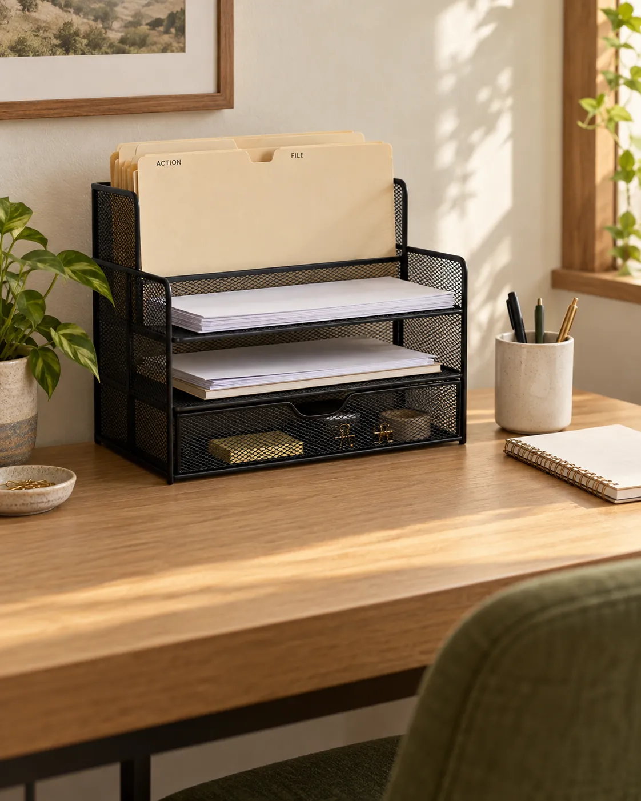

SMALL HOME · HOME OFFICE
7 Small Home Office Organization Ideas
A clearer desk starts with simple homes for paperwork, everyday tools and charging cables. Make your workspace easier to use without filling it with more storage.

HOME OFFICE IDEA 01
Clear a work zone before adding storage
A small home office may be a corner of a bedroom, a living-room desk or a table that serves several purposes. Start by removing everything from the surface, then return the equipment needed for your next task. Leave a usable area for typing, writing or opening a notebook instead of filling every empty spot with organizers.
Make it work: Separate daily tools from occasional supplies. Test the arrangement while seated: can you open the laptop, reach a pen and move the chair without shifting a pile? Keep the route to the desk clear. Organization should support the way you work; it does not replace adjusting your equipment and seating for comfort.

HOME OFFICE IDEA 02
Give paperwork an Action and File home
Mail, school forms and printed work notes can quickly occupy a small desk. Make two simple destinations: Action for papers that need attention, and File for documents you intend to keep. Recycle unwanted paper appropriately and keep personal information out of view when your workspace is shared.
Make it work: For US Letter documents, check that the organizer accepts 8.5 × 11-inch pages and your folders. Measure the desk depth as well as the height beneath any shelf. A tall file sorter can help, but only if it leaves room for your everyday work. Set a recurring time to process the Action folder instead of letting it become permanent storage.
Simple Houseware desk file organizer with drawer, black
The linked organizer combines upright sections, trays and a sliding drawer. Compare the current dimensions and configuration with your desk before buying. The illustrative photo may differ from the selected product.
View on Amazon →As an Amazon Associate I earn from qualifying purchases.HOME OFFICE IDEA 03
Keep a small set of daily tools close
Keep the pens, notebook and other tools you actually use near your working area. A mug you already own can hold a few pens; a shallow box or drawer compartment can collect paper clips and sticky notes. Move duplicates and seldom-used stationery away from the desktop.
Make it work: Sort by frequency rather than buying a container for every item. Try the arrangement for several work sessions before adding more storage. If a drawer sticks or becomes hard to close, reduce the contents and check the usable height. A tidy surface can still have useful everyday tools on it.

HOME OFFICE IDEA 04
Keep charging cable ends within reach
A small cable clip can keep a phone charging lead from dropping behind the desk every time you unplug it. Route the lead along the rear edge, with enough slack to connect the device comfortably. Keep cords away from the chair path, drawer runners and sharp edges.
Make it work: Check the cable diameter and the surface before using an adhesive holder. Follow the installation and removal instructions, and test a discreet spot on delicate finishes. Peel-and-stick does not guarantee damage-free removal. If adhesive is unsuitable for your desk or rental, use a non-adhesive arrangement you already have.
OHill self-adhesive cable clips, black, 16-piece pack
A pack of cable holders for keeping lightweight leads in place. Compare clip sizes with your cable diameter; one desk may need only a few. Do not rely on the clip to support a heavy adapter or replace proper cable routing.
View on Amazon →As an Amazon Associate I earn from qualifying purchases.HOME OFFICE IDEA 05
Bundle disconnected spare cords separately
Spare USB cables and headphone leads are easier to identify when stored separately. Disconnect the spares, coil each one loosely and add a small label if several look alike. Keep the cables that match your current devices and give the rest a deliberate storage or disposal decision.
Make it work: Use a loose reusable tie rather than pulling a cable into a tight bend. Store spare leads in a shallow drawer or pouch, separate from the charger you use every day. This idea is for disconnected spare cables; keep active equipment and adapters ventilated and follow their manufacturer instructions.
VELCRO Brand ONE-WRAP cable ties, 8 × 1/2 inch, black, 100-pack
Reusable ties can keep individual spare leads together. The selected listing is a 100-pack, which is more than a small desk needs; compare pack quantities before buying. Follow the tie and cable makers’ guidance and avoid overtightening.
View on Amazon →As an Amazon Associate I earn from qualifying purchases.HOME OFFICE IDEA 06
Use an existing shelf for occasional supplies
If your desk has little storage, look at a nearby shelf or cabinet before adding new furniture. Place occasional supplies in one labeled container: spare stationery, notebooks or work accessories. Keep items used every day near the desk and the backup supplies in their own home.
Make it work: Measure the shelf and container, and leave room to lift it out. Keep heavy items in a stable, accessible position and leave chair movement unobstructed. A repurposed bin is enough to test the system. Use suitable private storage for sensitive documents rather than treating an open basket as secure filing.
HOME OFFICE IDEA 07
Reset the desk before you leave
At the end of a work session, return tools to their places, move loose papers into Action or File, and leave out only what you need next. If the desk doubles as a dining or household surface, keep work items together so you can put them away without mixing them with unrelated belongings.
Make it work: A brief reset works best when every category already has a home. Write down the next task in your notebook, remove used cups and check that cables still leave the chair path clear. If clutter repeatedly returns to one spot, adjust that category’s storage instead of adding more containers everywhere.